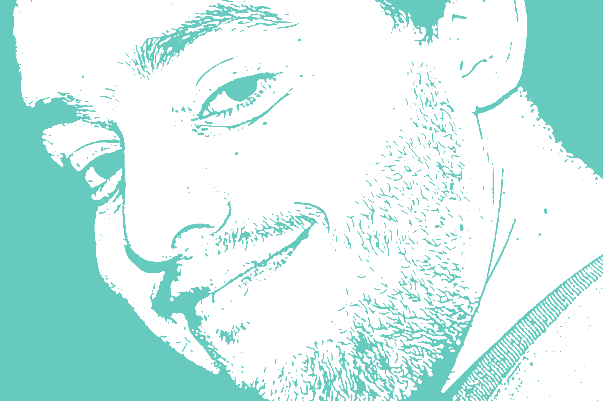

Hello, I'm Pedro Gomes
PhD Student and Researcher at Instituto de Telecomunicações
2009 - today
PhD Student in the MAP-i Doctoral Program in Computer Science
Theme: Designing usable frameworks for the collection and annotation of physiological signals in real scenarios
2004 - 2010
MSc in Network and Information Systems Engineering, Faculty of Sciences of the University of Porto, Portugal.
Thesis topic: Master Patient Index
2010 - today
Researcher at Instituto de Telecomunicações, Portugal.
2011
Teaching Assistant, Department of Computer Science, Faculty of Sciences of the University of Porto, Portugal.
2nd semester, "Estrutura de Dados", given by Prof. Dr. FernandoSilva.
2008 - 2009
Software Enginner, Siemens Healthcare, Portugal.
Vital Responder - Monitoring Stress in First Responder Professionals
Role: HCI and Software Engineer
DigiScope - DIGItally enhanced stethosCOPE for clinical usage
Role: HCI and Software Engineer
HeartSafe - Assessing Heart Function for Unsupervised Homecare Applications through Multi-Channel Auscultation
Role: Software Engineer
GEMINI – GastroEnterology Made INteractIve
Role: HCI and Software Engineer
CAGE - Computer Assisted Gastroenterology Examination
Role: Software Engineer
D. Pereira, A. Castro, P. Gomes, J. Areias, Z. Reis, M. Coimbra, R. Cruz-Correia, "Digital Auscultation: Challenges and Perspectives", Chapter in Encyclopedia of E-Health and Telemedicine, IGI Global, Hershey, 2016
D. Pereira, A. Castro, P. Gomes, S. Faria, C.S. Couto, R. Cruz-Correia, M. Coimbra, "IS4Learning - A Multiplatform Simulation Technology To Teach And Evaluate Auscultation Skills", in Health Professionals' Education in the Age of Clinical Information Systems, Mobile Computing and Social Networks, Elsevier, 2017
J. Pallauf, P. Gomes, S. Brás, J.P.S. Cunha, M. Coimbra, "Associating ECG features with firefighter’s activities", in Proc. IEEE Engineering in Medicine and Biology Conference, EMBC, Boston, USA, Sep 2011.
P. Gomes, B. Lopes, M. Coimbra, "Vital Analysis: Field Validation of a Framework for Annotating Biological Signals of First Responders in Action", in Proc. IEEE Engineering in Medicine and Biology Conference, EMBC, San Diego, USA, Sep 2012.
P. Gomes, M. Kaiseler, C. Queirós, M. Oliveira, B. Lopes, M. Coimbra, "Vital Analysis: Annotating sensed physiological signals with the stress levels of first responders in action", in Proc. IEEE Engineering in Medicine and Biology Conference, EMBC, San Diego, USA, Sep 2012.
D. Pereira, P. Gomes, É. Mota, E. Costa, R. Cruz-Correia, M. Coimbra, "Combining a tablet and an electronic stethoscope to create a new interaction paradigm for teaching cardiac auscultation", in Proc. 15th International Conference on Human-Computer Interaction, HCII, Las Vegas, USA, Jul 2013.
P. Gomes, M. Kaiseler, B. Lopes, S. Faria, C. Queirós, M. Coimbra, "Are standard heart rate variability measures associated with the self-perception of stress of firefighters in action?", in Proc. IEEE Engineering in Medicine and Biology Conference, EMBC, Osaka, Japan, Jul 2013.
A. R. Silva, P. Gomes, D. Pereira, S. Guimarães, A. Castro, "Design of a Mobile Application for Eye Signs Screening", International Conference on Health Informatics, HEALTHINF, Lisbon, Portugal, Jan 2015.
V. Estima, A. Castro, P. Gomes, V. Nunes, D. Pereira, "An Observational Study to Improve the Surgical Safety Checklist Viability", International Conference on Health Informatics, HEALTHINF, Lisbon, Portugal, Jan 2015.
P. Gomes, S. Frade, A. Castro, R. Cruz-Correia, D. Pereira, "A Proposal to Incorporate Digital Auscultation and Its Processing into an Existing Electronic Health Record", International Conference on Health Informatics, HEALTHINF, Lisbon, Portugal, Jan 2015.
D. Pereira, P. Gomes, S. Faria, R. Correia, and M. Coimbra, “Teaching Cardiopulmonary Auscultation in Workshops using a Virtual Patient Simulation Technology - A Pilot Study”, in Proc. IEEE Engineering in Medicine and Biology Conference, EMBC, Orlando, USA, Aug 2016.
A. Castro, P. Gomes, S. Mattos, and M. Coimbra, “Comparison Between Users of a New Methodology for Heart Sound Auscultation”, in Proc. IEEE Engineering in Medicine and Biology Conference, EMBC, Orlando, USA, Aug 2016.
D. Abrantes, P. Gomes, D. Pereira, and M. Coimbra, “Measuring the intuitive response of users when faced with different interactive paradigms to control a gastroenterology CAD system”, in Proc. IEEE Engineering in Medicine and Biology Conference, EMBC, Orlando, USA, Aug 2016.
P. Gomes, S. Faria, and M. Coimbra, “The Effect of Data Exchange Protocols on Decision Support Systems for Heart Sounds”, in Proc. IEEE Engineering in Medicine and Biology Conference, EMBC, Orlando, USA, Aug 2016.
D. Pereira, P. Gomes, R. Correia, J. Areias, S.S. Mattos, M. Coimbra, "Teaching Auscultation to the Pediatric Cardiologists of Tomorrow", in 7th World Congress of Paediatric Cardiology and Cardiac Surgery, Barcelona, Spain, Jul 2017.
Johannes Pallauf in his Master Thesis, "Associating ECG features with firefighter’s activities", Technische Universität München.
Vanessa Estima in her Master Thesis, "A new electronic approach to the surgical safety checklist", Instituto Superior de Engenharia do Porto.
Ana Rita Silva in her Master Thesis, "Mobile application to screening eye signs", Instituto Superior de Engenharia do Porto.
Sérgio Faria in his Master Thesis, "Dinamic workflow computing", Department of Computer Science, Faculty of Sciences of the University of Porto.
Andreia Goncalves Moreira in her Master Thesis, "Post-MAPS - An interactive acquisition platform for gastroenterology", Instituto Superior de Engenharia do Porto.
Pedro Miguel Loureiro Mourão in her Master Thesis, "Design, Implementation and Testing of a Solution to Measure Quality of Life using Mobile Devices", Department of Computer Science, Faculty of Sciences of the University of Porto.